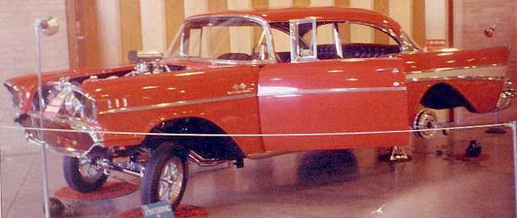

~ Ed White's 57 Chevy Gasser ~
|  |
|
LOOKING FOR PIX OR INFO ON THIS 57 GASSER/SHOW
CAR HI BYRON, JOHN HALL AGAIN. I WAS WONDERING IF YOU'VE EVER SEEN THIS CAR? IT IS ON THE CARNUT SITE AND I FOUND A SMALL PHOTO OF IT IN A 1972 DEC. HOT ROD IN READERS RIDES THAT SAID IT WAS OWNED BY ED WHITE FROM WICHITA, KANSAS. AT THIS TIME I'M BUILDING A 57 2 DR HT PRO STREET AND WAS THINKING ABOUT STYLING AFTER THIS OR A CLOSE VERSION AND AM LOOKING FOR MORE PICTURES THANKS JOHN HALL JR. jchinstall@yahoo.com |